Condições para a medição Informações Importantes
Procedimentos.
Remover o isolamento acústico traseiro:
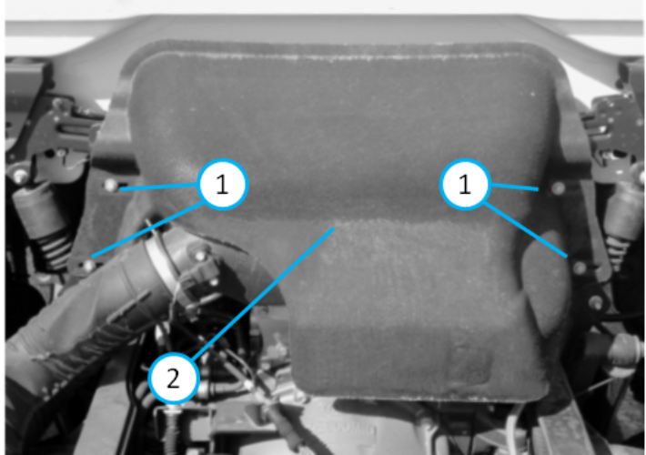
Soltar e remover os parafusos (1). Remover o acabamento acústico (2) do veículo. Observe abaixo a localização do cilindro da válvula EGR:
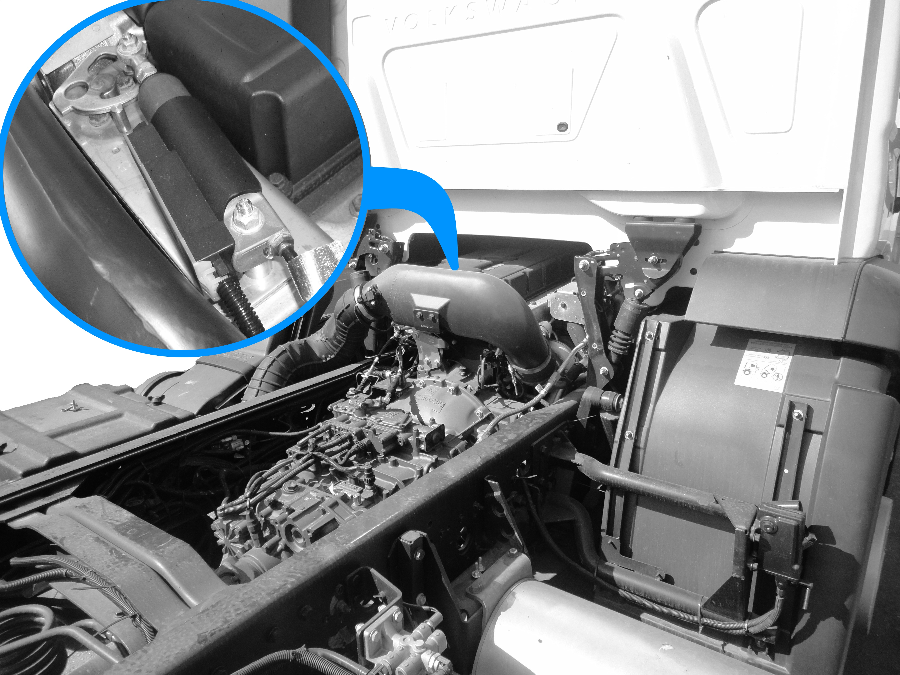
Destravar o conector:
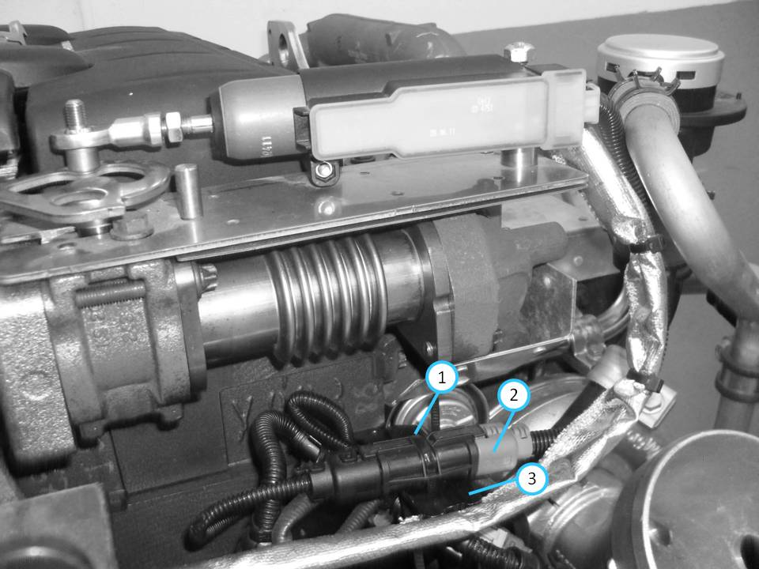 Localizar o conector do cilindro da válvula EGR; Retirar a abraçadeira plástica (1); Remover o conector (2) de seu suporte (3).
Desconectar o conector:
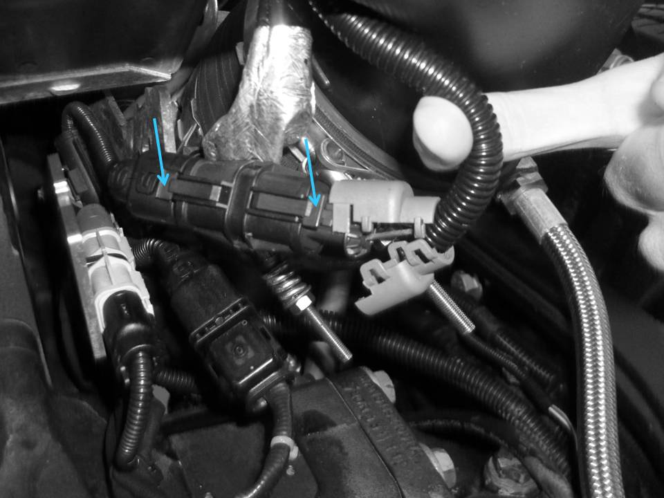
Liberar as travas (SETAS) e desconectar os conectores.
Expor
os terminais:
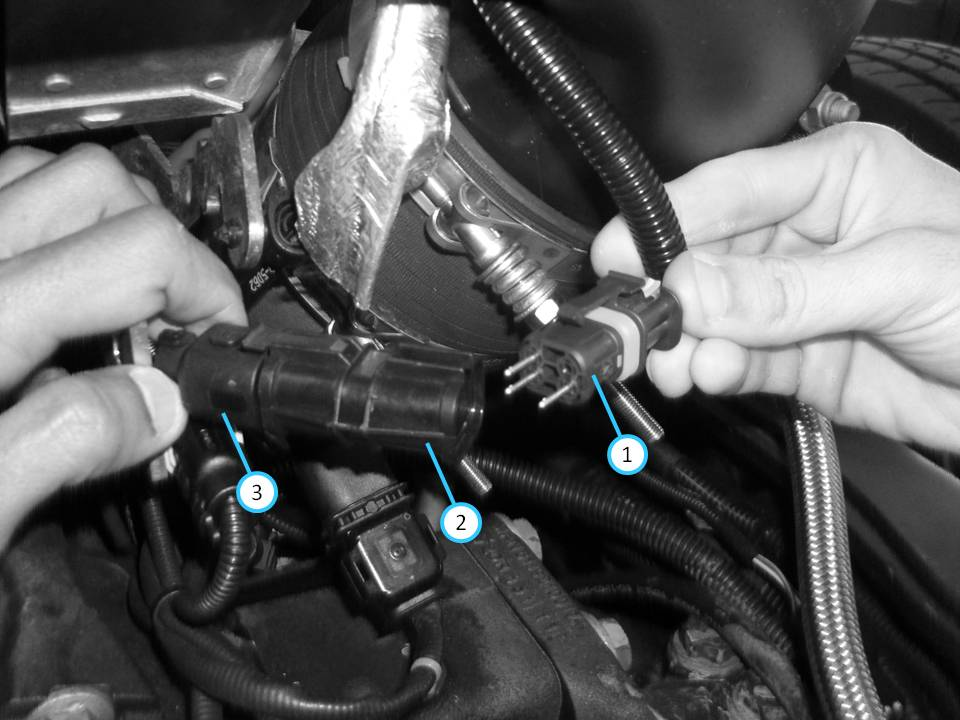 Desconectar o conector (1) da cobertura de proteção dos terminais (2); Desconectar o conector (3) da cobertura de proteção dos terminais (2); Remover a cobertura de proteção dos terminais (2).
Refazer a conexão dos conectores:
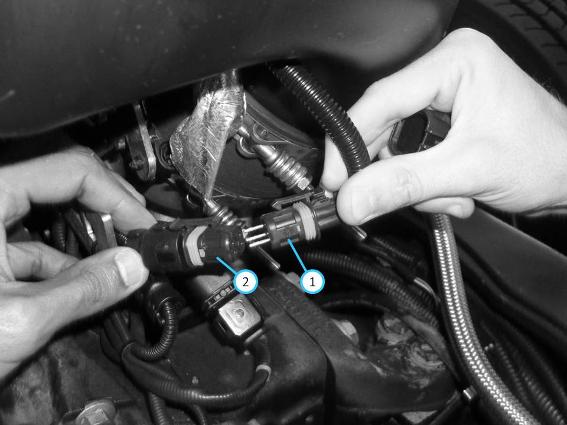 Encaixar os terminais do conector (1) no conector (2).
Instalar o Multímetro:
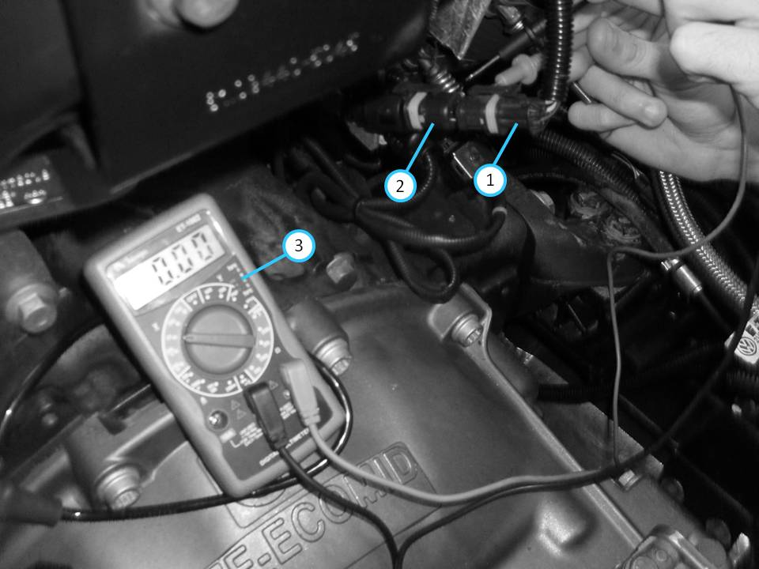
Encaixar os terminais do conector (1) no conector (2); Instalar as pontas de prova do multímetro (3) nos pinos 1 e 2 do conector; Selecionar a escala de tensão VDC; Ligar o multímetro.
Detalhe dos pinos 1 e 2 do conector:
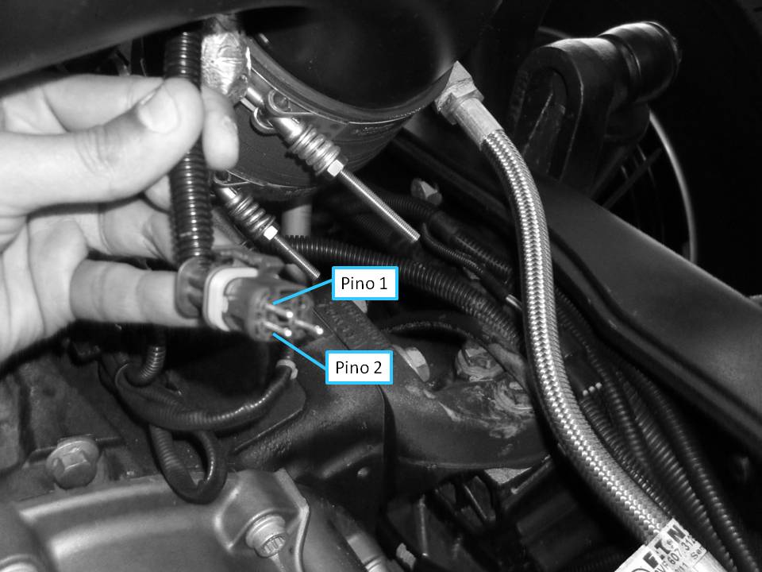
Efetuar a leitura no visor do multímetro:
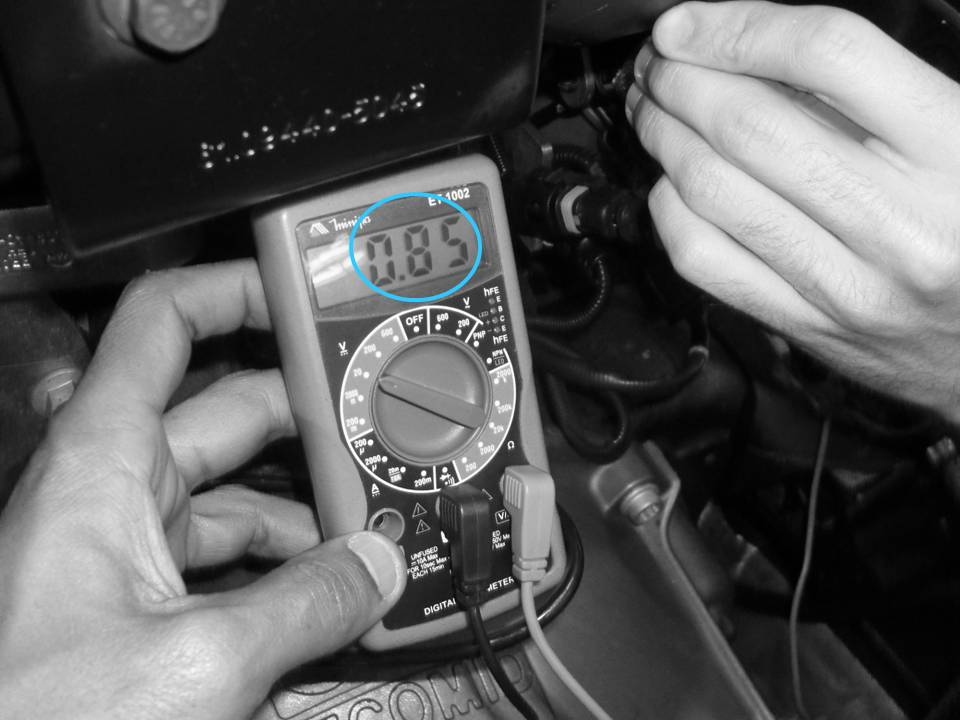
Ligar a ignição; Manter o cilindro de acionamento da válvula EGR na posição fechada; O valor de tensão deve estar entre 0,75v e 0,85v; Realizar o procedimento de ajuste da haste do cilindro de acionamento, caso a tensão não esteja entre 0,75v e 0,85v.
Instalar o isolamento acústico:
Desligar a ignição; Refazer as conexões; Posicionar o acabamento acústico (2) no veículo; Instalar os parafusos (1); Apertar os parafusos com torque de 20 Nm (2,0 kgf.m).
Procedimentos para ajustar a haste do cilindro de acionamento da válvula EGR: Condições
para a medição Informações Importantes
Procedimentos.
Soltar as porcas:
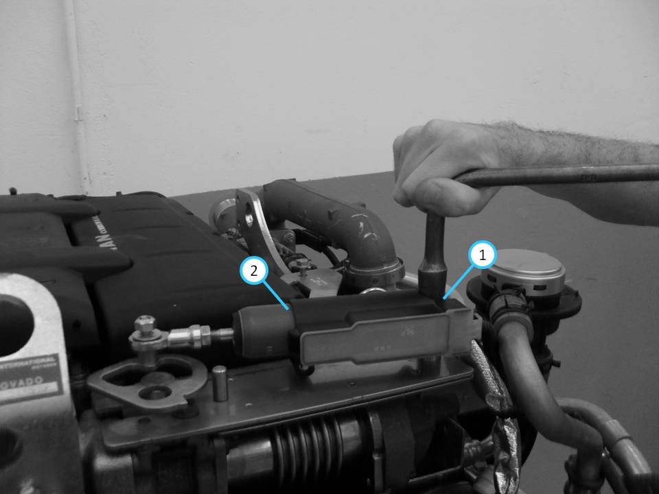 Soltar a porca (1) de fixação do cilindro
(2), sem removê-la.
Desencaixar a haste do cilindro de acionamento da válvula EGR:
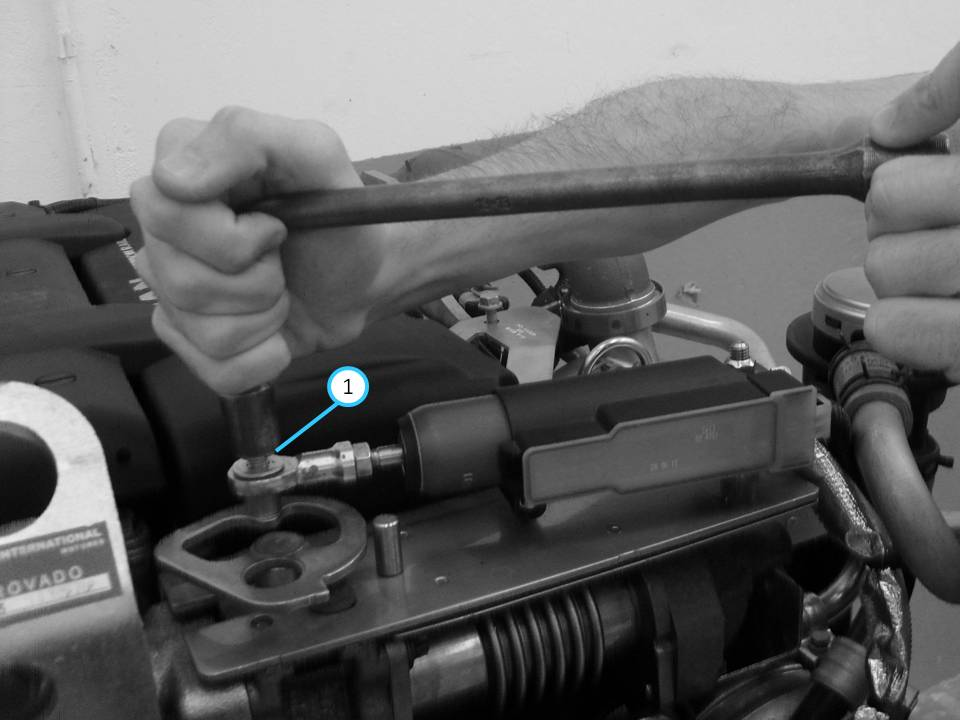 Soltar e remover a porca (1) e sua arruela.
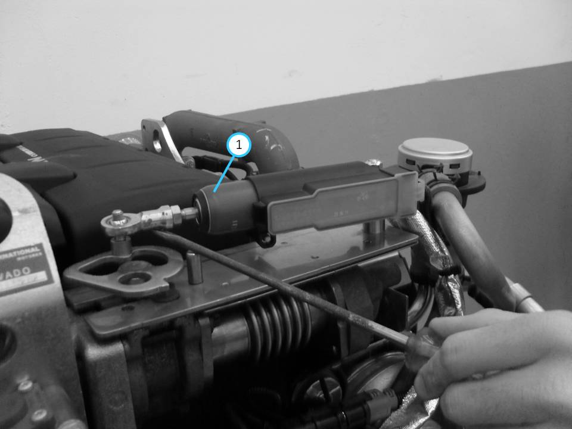 Utilizar uma chave de fenda para desencaixar a haste; Desencaixar a extremidade da haste do cilindro (1) do eixo da válvula de bloqueio.
Medir o valor de tensão com a haste do cilindro de acionamento da válvula EGR desencaixada:
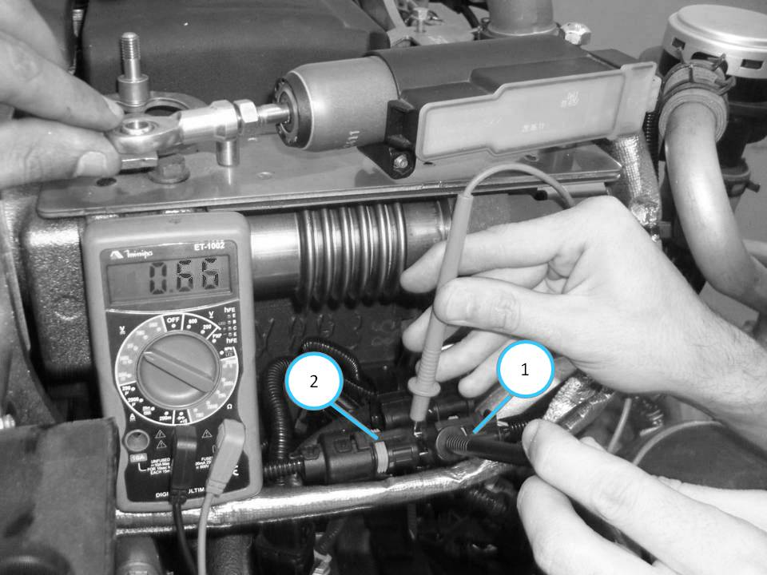
Posicionar o cilindro de acionamento da válvula EGR na condição livre (posição real 0% de deslocamento); Encaixar os terminais do conector (1) no conector (2); Instalar as pontas de prova do multímetro nos pinos 1 e 2 do conector; Ligar o multímetro; Selecionar a escala de tensão VDC; Observar que o valor mínimo de tensão encontrado deverá ser de 0,66v.
Pré-carga da haste, ajustar:
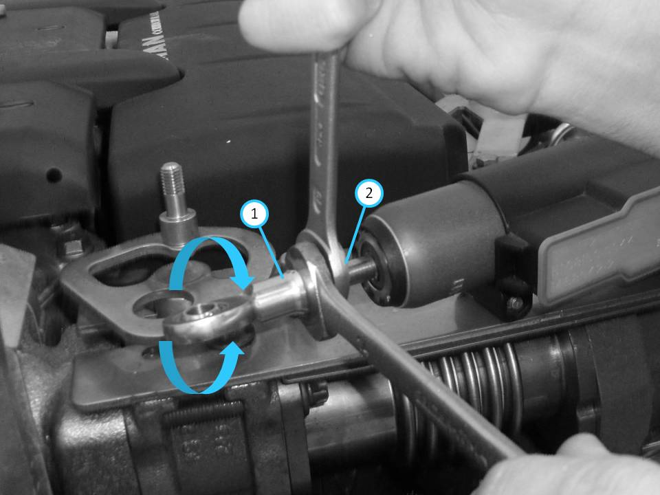 Soltar a contraporca (2) do olhal (1) da extremidade da haste; Girar o olhal (1) da extremidade da haste para aumentar ou diminuir a pré-carga; Encaixar o olhal (1) da extremidade da haste no eixo da válvula de bloqueio; Efetuar a leitura do valor no visor do multímetro; Repetir a regulagem até obter o valor de 0,66 V.
Eixo da válvula de bloqueio:
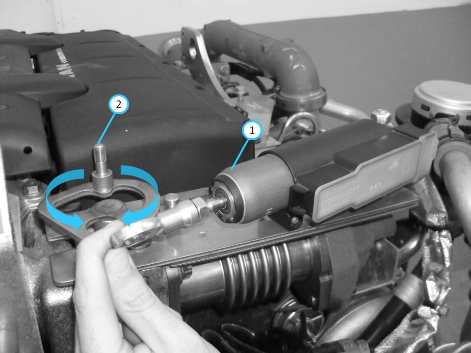
Distanciar o cilindro de acionamento da válvula EGR (1) do eixo da válvula de bloqueio (2); Movimentar o eixo da válvula de bloqueio (2) de batente a batente, conforme indicado na ilustração.
|
||||||||||||||||||||||||||||